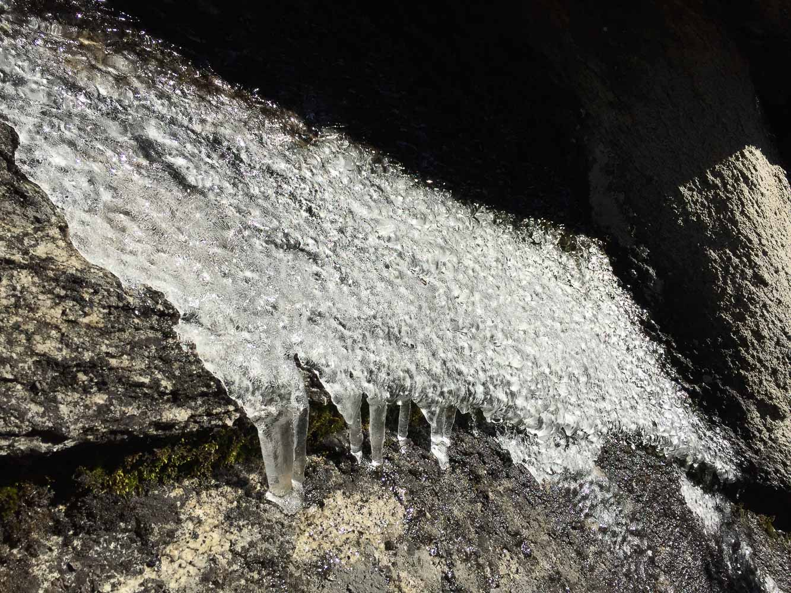
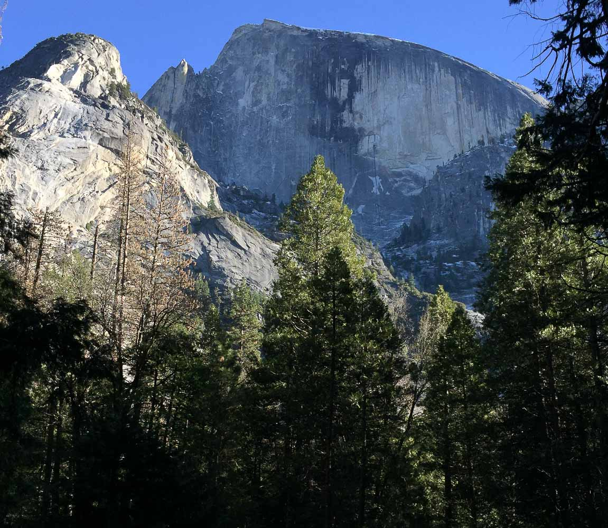

Yosemite Valley - December 2018
Took the Amtrak again with Jeffery, I think it was our third time! We camped at a nice out-of-the-way spot between Mirror Lake and the stables because we couldn't find camping anywhere else (most campsites are walk-in and busy). And it's not like we had a car to drive out to a hotel...
{kind=link}
trusty MSR
On the first day we hiked up the Snow Creek trail, and we got some solid views of Clouds Rest and Half Dome. We only began to hit snow at the very top, near 6600', and even then the snow was only an inch or so in the shadows of bushes. I was very disappointed because I had hauled my snowshoes all the way up there to find that they would only be useful about 2000' higher. We didn't have enough time to get that far since the sun set at 5:00, so we turned back at the end of the switchbacks.
{kind=link}
Half Dome clouds
{kind=link}
Half Dome clouds
{kind=link}
finally warm
{kind=link}
the quarter domes

Jeffery's bad idea

{kind=link}
cool ice formation
{kind=link}
Watkin's pinnacles and Clouds rest
See here for a b&w print of ^ image.
{kind=link}
{kind=link}
Jeffery
{kind=link}
coming down
{kind=link}
Tenaya canyon

{kind=link}
In the winter, Half Dome's northwest face is only illuminated for a few minutes each day at sunset
We came back, hung out in the Curry village lounge for a few hours, then went back to our tent. The next day we took a short hike halfway up Yosemite Falls (we reasoned that the top would be snowy and didn't have a unique enough view to compensate). There was a lot of ice on the falls, not as much as in the morning, but still a good amount. We could see the "ice cone" at the base of the upper falls.
{kind=link}
From Columbia Rock
{kind=link}
Mt. Clark

Merced river
{kind=link}
Upper falls
We headed out the very next day! Right before our bus left I went into the Curry village store, and it was like boiling in there! I was so hot I bought a mango sorbet and immediately regretted that when I went outside. I think the sorbet got harder than it was in the fridge! I ended up eating the whole thing (like a solid pint) and felt very bad for the rest of the day.